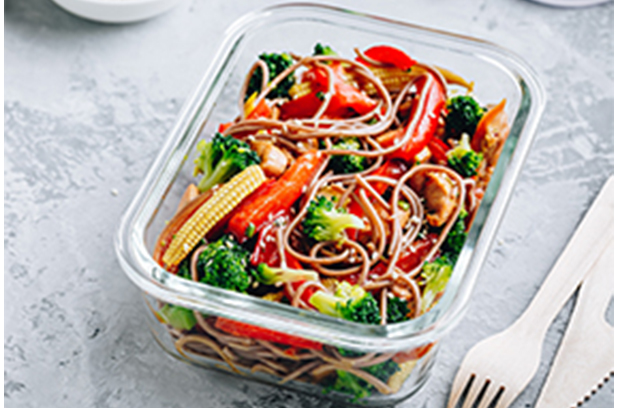
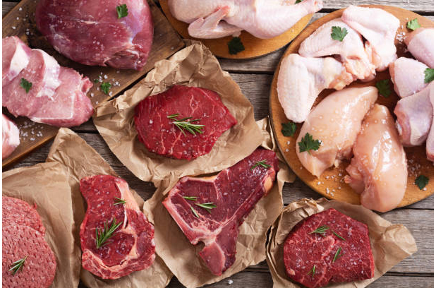
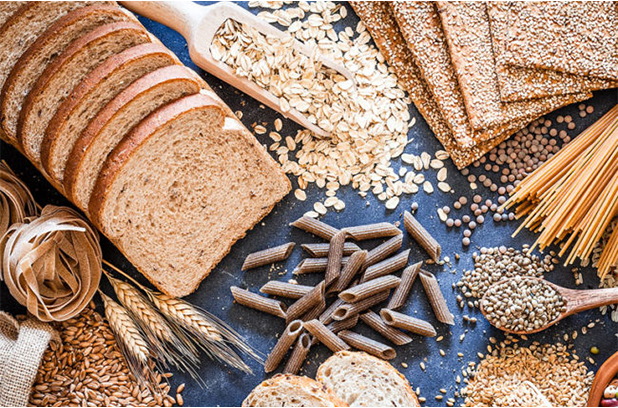
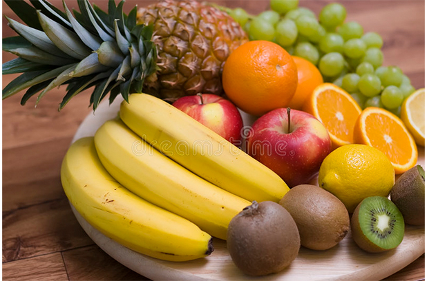
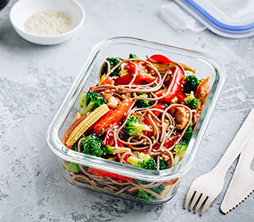
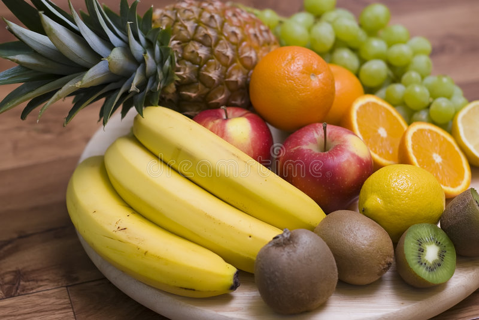

1 / 4

2 / 4

3 / 4

4 / 4

Vegetables: Add variety to grilled or steamed vegetables with an herb such as rosemary. You can also sauté (panfry) vegetables in a non-stick pan with a small amount of cooking spray. Or try frozen or canned vegetables for a quick side dish—just microwave and serve. Look for canned vegetables without added salt, butter, or cream sauces. For variety, try a new vegetable each week.">


Fruits: Fresh, frozen, or canned fruits are great choices. Try fruits beyond apples and bananas such as mango, pineapple or kiwi fruit. When fresh fruit is not in season, try a frozen, canned, or dried variety. Be aware that dried and canned fruit may contain added sugars or syrups. Choose canned varieties of fruit packed in water or in its own juice.">